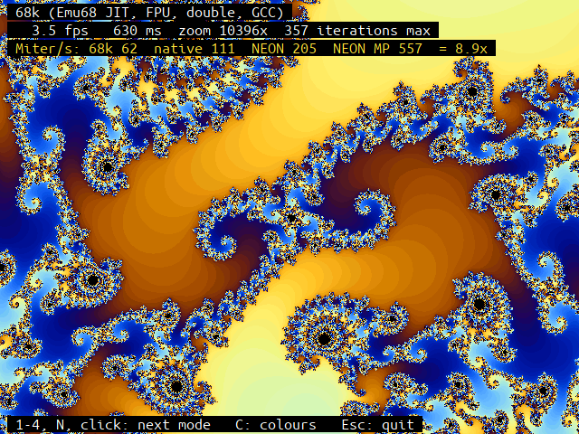
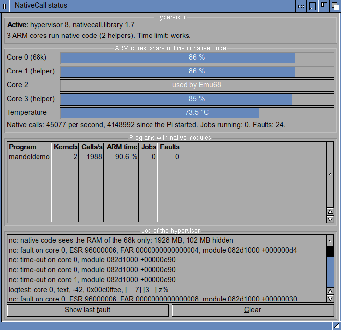

Native ARM code for 68k Amiga programs on a PiStorm with a Raspberry Pi 4, without changing Emu68.
A PiStorm replaces the Amiga's 68000-class CPU with a Raspberry Pi. Emu68 runs on the Pi and translates 68k code to ARM code as it goes, which makes an A1200 far faster than any real 68k. But the program still only uses what a 68k has. It cannot reach the NEON vector unit, the ARM CRC32 instruction, or the other cores of the Pi.
NativeCall lets a 68k program hand its heavy calculations to native ARM code. The model is the one PowerPC accelerator cards used with WarpOS and PowerUP:
Nothing in Emu68 is changed. NativeCall is one file on the SD card, one line in config.txt, and a
shared library. Commenting out that one line returns the machine to how it was.
Measured on one A1200 with a PiStorm32-lite and an 8 GB Pi 4.
| Workload | 68k (Emu68 JIT) | Native | Gain |
|---|---|---|---|
| CRC32 of 4 MB, ARM CRC32 instruction | 52.11 ms | 2.38 ms | 21.9x |
| Ray tracing, 3 cores | 1.9 fps | 33.6 fps | 18.4x |
| Rotate, scale and 3x3 filter, 3 cores | 9.7 fps | 125.3 fps | 15.5x |
| 1500-body gravity, 3 cores | 6.0 fps | 61.0 fps | 10.9x |
| 4x4 matrix × 10 000 vertices, NEON | 1.01 ms | 0.11 ms | 9.2x |
| Mandelbrot zoom, NEON on 3 cores | 3.2 fps | 27.1 fps | 8.8x (iterations/s) |
| Adler32 of 4 MB, NEON | 19.86 ms | 2.77 ms | 7.2x |
| MP3 decoding, 1 core | 27.8x real time | 198x real time | 7.1x |
| Voxel landscape, 3 cores | 40.7 fps | 198.3 fps | 6.0x |
| Software 3D torus, 3 cores | 50.4 fps | 204.6 fps | 4.1x |
| Same plain C code, 1 core | 1.4x to 2.4x | ||
| GPU-limited demo (Boing Ocean) | 55.3 fps | 55.8 fps | +0.9% |
Two lessons sit in this table. Emu68's JIT is already good, so plain C gains only about 2x: the large gains come from what the 68k has no equivalent of. And a program whose frame time goes to the GPU gains almost nothing, because the CPU was not what held it back.
The gains of the graphics demos compare the time to compute a frame; the copy to the screen costs the same on both sides. A gain also depends on how well the 68k side was compiled: with better compiler flags for Emu68, the 68k version of the 3D demo doubled its speed, and its gain on one core went from 6.7x to 3.4x.

mandeldemo on the A1200. The top lines compare the modes in millions of iterations per second.An ARM processor has privilege levels. Applications run at EL0, an operating system at EL1, a hypervisor at EL2. Code at a higher level can arrange to be told when a lower level does certain things: this is called a trap. Emu68 normally drops to EL1 and leaves EL2 empty. NativeCall lives in that empty level.
The Pi firmware starts a small program, the armstub, before the kernel. A line in config.txt can replace it, and this is
a standard firmware feature. Ours takes the top 2 MB of RAM out of the device tree, so Emu68 never sees them, copies the hypervisor there, and starts Emu68 at EL1 with one
trap enabled: HCR_EL2.TPC, which sends the ARM cache instruction dc civac to EL2.
The 68k cannot call EL2 directly, but it can execute CPUSHL DC,(A0), a normal 68040 cache instruction. Emu68 translates that into
dc civac, which traps. So a request looks like this:
CPUSHL DC,(A0) in supervisor mode.A round trip costs about 5.5 µs. Without the hypervisor, CPUSHL is only a cache flush: the status stays 0, and the library
knows to use the 68k code. There is no exception and nothing to configure.
Why a doorbell? The first version recognized requests by a magic word in memory. Our own binaries contain that word,
so when a network driver flushed a DMA buffer where it fell on a 64-byte boundary, the hypervisor wrote a "reply" into network data, and the
Amiga reset. Now every other dc civac is only redone on its physical address, and memory is never looked at without the register values.
NC_ST_FAULT and the machine goes on.NC_ST_TIMEOUT.-mbig-endian and 68k data needs no conversion.Emu68 checks for 68k interrupts between translated blocks. While a kernel runs on core 0, sound, input and multitasking wait, so a call should stay around 1 ms.
nc_run cuts a job into pieces of about 0.5 ms. The hypervisor measures each piece with the ARM counter, and the library learns the
right size for each kernel. In the 3D demo this kept the longest call at 752 µs.
Emu68 leaves cores 1 and 3 asleep in a wfe loop. Taking them without patching Emu68 took a small trick. Emu68 overwrites the register that
controls wfe trapping when a core starts, but only adds to the one controlling performance counter traps. So the hypervisor sets that one
(MDCR_EL2.TPM) first. The first thing the core does in Emu68 is touch a performance counter; that traps, and only then does the hypervisor turn on
wfe trapping (HCR_EL2.TWE). From there on, each idle wfe arrives in the hypervisor, which gives the core work if there is any.
All cores take pieces from one atomic counter. A core that is busy with something else simply takes none, and nobody waits for it. Each core gets its own copy of the parameters, with its piece in them, and the results are added up.
nc_start_mp gives a job to the helper cores and returns after about 8 µs. The 68k carries on, with interrupts and multitasking running.
nc_wait collects the result; if the job has not finished, core 0 helps in steps of at most 0.5 ms. In a test, a job finished in half
the single-core time while the 68k never stopped. nc_cancel stops a job, and the jobs of a program that exits or crashes are cancelled
for it. The MP3 demo decodes this way: an idle core fills the next buffer while the 68k only hands buffers to AHI.
A kernel cannot open a window or print. Instead it writes to a log in the hypervisor with nc_printf, and NCLog on the
Amiga prints it. After a fault, NCLog FAULT shows the ARM registers and a backtrace, and nc addr2line on the PC turns
that into source lines. The hypervisor also counts, per core, the time spent in native code. NCStatus shows it
with the temperature and the programs that have native modules loaded; NCLog STATS prints the same in the Shell.

NCStatus on the A1200 while mandeldemo runs on three cores.config.txt from the SD card's FAT partition.nativecall-armstub.bin to that partition, and add armstub=nativecall-armstub.bin below arm_64bit=1.nativecall.library to LIBS:, NCLog and PiReboot to C:, and NCStatus wherever you like.hello LOOP=1000 FAULT TIMEOUT and NCLog STATS to check.Tested on an 8 GB Pi 4. The hypervisor finds its place in the device tree, so other RAM sizes should work (tested in QEMU), and if the
layout is unexpected Emu68 simply starts without native calls. To go back, put a # in front of the line, using a PC if necessary.
/* myprog_kernels.h: seen by both sides */
struct ScaleParams {
struct NCRange range; /* [from, to) */
NC_U32 samples; /* a 68k address */
NC_S32 factor;
};
#define MYPROG_KERNELS(K) K(scale)
NC_DECLARE(myprog, MYPROG_KERNELS)
/* myprog_kernels.c: compiled for ARM and for the 68k */
NC_KERNEL(scale)
{
struct ScaleParams *p = params;
NC_S16 *s = NC_PTR(NC_S16, p->samples);
for (NC_U32 i = p->range.from; i < p->range.to; i++)
s[i] = (NC_S16)((s[i] * p->factor) >> 8);
return 0;
}
NC_MODULE(myprog, MYPROG_KERNELS)
/* main.c: an ordinary AmigaOS program */
struct NCKernels *k = nc_open(&myprog_kernels);
struct ScaleParams *p = nc_alloc(sizeof(*p));
/* ... */
nc_run_mp(k, NCK_scale, p, sizeof(*p), 0, count);
nc_close(k);Everything builds in Docker, with VBCC or GCC on the 68k side. The module is embedded in the program, so it remains one file.
sdk/nc image # once
sdk/nc new myprog
cd myprog
../sdk/nc make # VBCC
../sdk/nc make CC68=gcc # GCC| Call | Runs on | The 68k | Use for | Fixed cost |
|---|---|---|---|---|
nc_call | core 0 | waits | one short job | 5.5 µs |
nc_run | core 0 | waits, runs between pieces | a big job on one core | 7 µs |
nc_run_mp | cores 0, 1, 3 | waits, runs between calls | a big job with independent parts | 11 µs |
nc_start_mp | cores 1, 3 | goes on | a job whose result can wait | 15 µs with wait |
nc_run_mp; less than 32 KB of local variables.| Program | What it shows |
|---|---|
hello | every feature as a small test: calls, faults, cores, jobs, time limit, log, protection, cancel |
bench, cputest | checksums, matrices, primes, Mandelbrot: 68k against native against NEON |
ncdemo | software 3D with a z-buffer, the pattern for games |
mandeldemo | NEON intrinsics and nc_run_mp |
raydemo | real-time ray tracing with mirror spheres and shadows |
voxeldemo | flight over a height map |
nbodydemo | gravity between 1500 bodies, a step that several cores can share |
filterdemo | image rotation and 3x3 filters, two kernels in a row |
mp3demo | an MP3 player whose decoder runs on an idle core |
In the graphics demos the keys 1 to 3 switch between 68k, native and native on all cores while the picture runs.
In QEMU, before hardware. An unmodified Emu68 boots under the hypervisor on QEMU's Pi 3 and Pi 4 models, also started by the real armstub the way the firmware does it, and a bare 68k program exercises each request: spoofed blocks, ping, cache sync,
native calls, caught faults, invalid entries, 1000-call loops, core capture, shared jobs, asynchronous jobs and full job slots, endless kernels, the log, fault details,
forbidden memory, cancelled jobs and statistics. QEMU needed small patches: to trap wfe as real cores do, and to model the Pi 4's interrupt controller
with its security extensions. The device tree parser is tested alone on 16 layouts. QEMU proves the protocol but not the speed, and it has no real Pi 4 firmware or caches.
On the A1200. Example programs check results against the 68k version, count which core did what, verify the allocator on both sides, and measure call costs. During 5 million native calls, 5 × 16 MB were copied over the network with matching checksums while Workbench kept responding. For this release, all ten examples built by both compilers ran from the release binaries, and the checksum benchmark ran 350 times in a row.
In WinUAE. With no hypervisor, and with and without the library, programs from both compilers took the 68k path with correct results (release 1.5.0).
Bugs found this way shaped the design: a black screen on the first boot from a skipped cache flush, the phantom requests described above, wrong results from a
code model that assumed page alignment, and a saved processor state overwritten by a native fault. They are written up in NOTES.md.
If you built modules with SDK 1.5.0 or 1.6.0, rebuild them. Those SDKs left a module's zero-initialised variables out of the module file, so a kernel with static or global variables wrote past its module and could corrupt memory: a rare reset that took a day to find, because it looked like a hypervisor bug. Library 1.6 and newer also keep 64 KB of slack behind every module.
enable_gic=0 has none.async_log and ppc_enable with several cores are understood from the Emu68 source but have not been tested.README.md | overview, build, tests |
INSTALL.md | installation, rollback, verification |
sdk/README.md | the API, kernel rules, adding it to an existing project |
RESULTS.md | all measurements |
NOTES.md | technical notes with Emu68 source references |